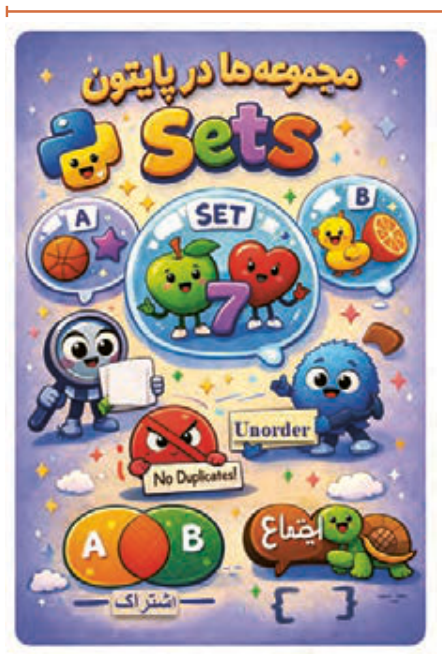
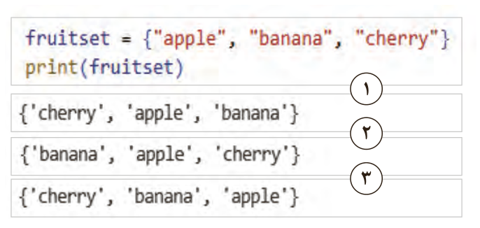
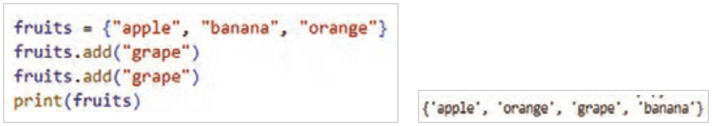
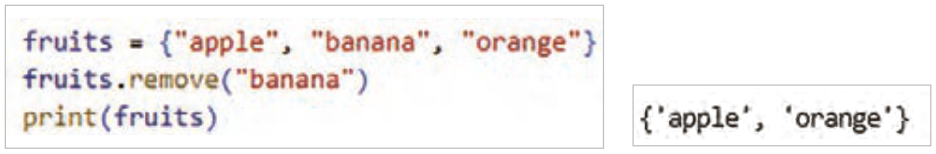
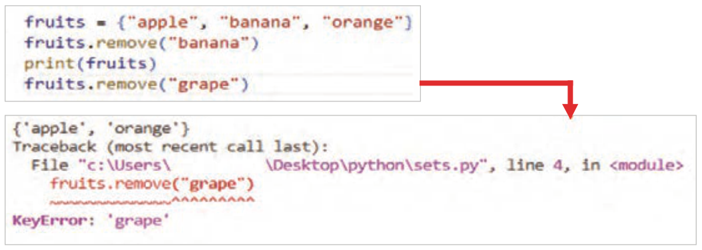
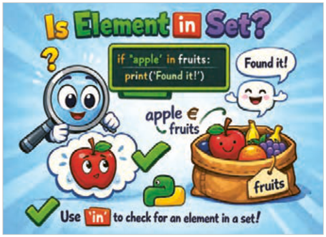
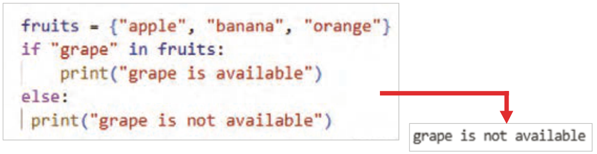

اگر بخواهید یک مجموعه از اعداد بدون تکرار بسازید، یا ترتیب دادهها را حفظ کنید و تغییرناپذیر باشد، از چه نوع دادهای استفاده میکنید؟
فرض کنید میخواهید اطلاعات یک دانشآموز مثل نام، سن و نمرات او را ذخیره کنید و سریع به هر مورد دسترسی داشته باشید، چه ساختار دادهای مناسب است؟
اگر بخواهید یک عمل خاص را چند بار در برنامه استفاده کنید، بدون اینکه کد را تکرار کنید، چه راهی وجود دارد؟
چگونه میتوانید در یک تابع تعداد زیادی داده را پردازش کنید یا عملیات تکراری انجام دهید، بدون اینکه کد طولانی شود؟
چگونه میتوانید از کدهای آماده دیگران استفاده کنید؟ چه تفاوتی بین تابع و متد وجود دارد؟
در پایان از هنرجو انتظار میرود
مجموعهها و توپِلها را تعریف کند، عناصر آنها را اضافه یا حذف کند و کاربرد هریک را بداند.
دیکشنری بسازد، کلید و مقدار اضافه کند، دادهها را با کلیدها بازیابی کند و کاربرد دیکشنری را در ذخیرهسازی اطلاعات بداند.
هنرجو قادر باشد توابع ساده بنویسد، پارامترها و آرگومانها را استفاده کند و مقدار بازگشتی تابع را دریافت و به کار ببرد.
هنرجو بتواند توابع پیچیدهتری بنویسد، از حلقهها در توابع استفاده کند و عملیات تکراری را در توابع مدیریت کند.
ماژولها را وارد کند، توابع و کلاسهای آماده را در برنامه خود استفاده کند و ماژولهای استاندارد پایتون را شناسایی کند.
ماژولهای محلی را ایجاد و استفاده کند.
استاندارد عملکرد
هنرجو بتواند توابع و ماژولها را ایجاد و استفاده کند، دادهها و عملیات تکراری را با توابع مدیریت کند، از ماژولهای محلی بهره ببرد و تفاوت بین تابع و متد را تشخیص دهد.
صفحه ۴۹
در برنامهنویسی، هرچه برنامهها بزرگتر و پیچیدهتر میشوند، نیاز به سازماندهی و استفاده مجدد از کد بیشتر حس میشود. توابع و ماژولها ابزارهایی هستند که به برنامهنویس کمک میکنند تا کدهای خود را مرتب، قابل فهم و قابل استفاده دوباره بسازد. در این واحد یادگیری، شما با ساخت توابع، استفاده از پارامترها و مقدار بازگشتی، نوشتن توابع پیشرفته با حلقهها و همچنین استفاده از ماژولهای آماده و ماژولهای محلی آشنا میشوید. با یادگیری این مفاهیم، میتوانید برنامههای سازمانیافتهتر و حرفهایتری ایجاد کنید.
مجموعهها (set)

شکل ۹۷
مجموعهها برای ذخیره چند مقدار در یک متغیر استفاده میشوند. مجموعه یکی از چهار نوع دادۀ پایتون است که برای ذخیرهسازی انواع دادهها مثل اعداد صحیح، اعداد اعشاری، رشتهها، بولینها و توپلها (tuple) بهصورت مجموعهای بهکار میرود.
ساخت set
استفاده از آکولاد {}:
این روش معمولاً برای ساختن مجموعهای از عناصر مشخص و از پیش تعیینشده استفاده میشود.
پس از هر بار اجرای برنامه مشاهده خواهید کرد که ترتیب نمایش اعضای مجموعه فرق میکند (شکل98). یعنی set ترتیب نمایش عناصر را تضمین نمیکند و Unorder است.

شکل ۹۸
صفحه ۵۰
استفاده از متد (add) برای اضافهکردن عنصر جدید به set
برنامه را اجرا کنید. مشاهده خواهید کرد که عناصر تکراری به مجموعه اضافه نشدهاند (شکل99).

شکل ۹۹
استفاده از متد (remove) برای حذف عنصر از set
با استفاده از متد remove میتوانید عناصر یک set را حذف کنید.
مثال: با استفاده از متد remove عنصر "banana" از مجموعه حذف شده است (شکل100).

شکل ۱۰۰
درصورتیکه عضو وجود نداشته باشد در زمان اجرا پیغام خطا نشان داده میشود (شکل101).

شکل ۱۰۱
صفحه ۵۱
استفاده از in برای بررسی وجود عنصر در set

شکل ۱۰۲
مثال: در کد شکل 103 وجود عنصر"grape" در مجموعه fruits مورد بررسی قرار گرفته است. خروجی کد نشان میدهد این عنصر در مجموعه وجود ندارد.

شکل ۱۰۳
Page 48
Learning unit 2
Have you ever thought about this
If you want to build a collection of numbers with no repeats, or keep the order of the data and make it unchangeable, which data type do you use?
Suppose you want to store a student's information, such as name, age, and grades, and get to each item quickly. Which data structure is suitable?
If you want to use a certain operation several times in a program without repeating the code, what can you do?
How can you process a lot of data or do repeated operations in a function without making the code long?
How can you use code that others have already written? What is the difference between a function and a method?
By the end, the student is expected to
Define sets and tuples, add or remove their elements, and know what each is used for.
Build a dictionary, add keys and values, retrieve data by key, and know how dictionaries are used to store information.
The student can write simple functions, use parameters and arguments, and receive and use a function's return value.
The student can write more complex functions, use loops in functions, and handle repeated operations in functions.
Import modules, use ready-made functions and classes in their program, and recognize Python's standard modules.
Create and use local modules.
Performance standard
The student can create and use functions and modules, handle data and repeated operations with functions, make use of local modules, and tell the difference between a function and a method.
Page 49
In programming, the bigger and more complex programs get, the more you need to organize and reuse code. Functions and modules are tools that help programmers keep their code tidy, understandable, and reusable. In this learning unit you will learn to build functions, use parameters and return values, write advanced functions with loops, and use ready-made and local modules. With these concepts you can build more organized and professional programs.
Sets (set)
Figure 97
Sets are used to store several values in one variable. A set is one of Python's four collection data types and is used to store data such as integers, decimal numbers, strings, booleans, and tuples (tuple) as a collection.
Creating a set
Using curly braces {}:
This method is usually used to build a set of specific, predefined elements.
Each time you run the program you will see that the members of the set are shown in a different order (Figure 98). That is, a set does not guarantee the order of its elements; it is unordered (Unorder).
Figure 98
Page 50
Using the add method to add a new element to a set
Run the program. You will see that duplicate elements are not added to the set (Figure 99).
Figure 99
Using the remove method to remove an element from a set
With the remove method you can remove elements of a set.
Example: the element "banana" is removed from the set with the remove method (Figure 100).
Figure 100
If the member does not exist, an error message is shown when the program runs (Figure 101).
Figure 101
Page 51
Using in to check whether an element is in a set
Figure 102
مثال: در کد شکل 103 وجود عنصر"grape" در مجموعه fruits مورد بررسی قرار گرفته است. خروجی کد نشان میدهد این عنصر در مجموعه وجود ندارد.